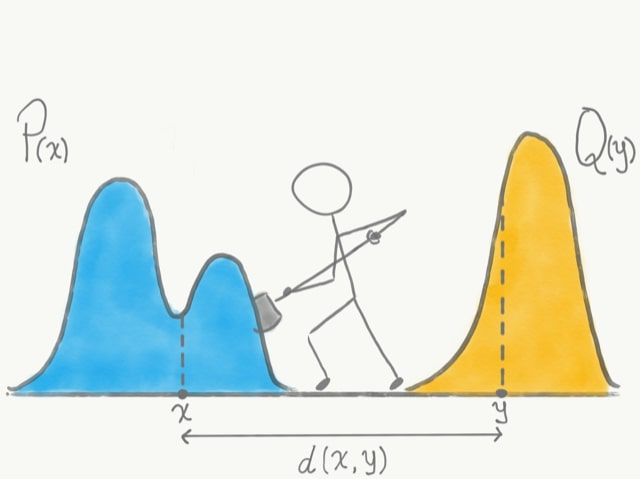

Optimal Transport: From Monge to Kantorovich
Optimal Transport (OT) is a fascinating field of mathematics dealing with the optimal way to move mass from one configuration to another, minimizing a certain transportation cost. Its origins date back to the late 18th century, but its modern formulation and applications span across economics, statistics, computer graphics, machine learning, and more. In this post, we'll explore the foundational problems posed by Gaspard Monge and Leonid Kantorovich.
A Brief History
The story begins in 1781 with the French mathematician and engineer **Gaspard Monge**. He was tasked with a practical problem: finding the most cost-effective way to move soil from embankments (déblais) to fill excavations (remblais) for fortifications. He formalized this as finding a *transport map* $T$ that moves mass distributed according to a measure $\mu$ to match a target distribution $\nu$, while minimizing the total work done, where work is defined by a cost function $c(x, y)$ representing the cost of moving a unit of mass from location $x$ to location $y$.
While Monge's formulation was intuitive, it proved mathematically challenging and didn't always guarantee a solution. It took over 150 years for a major breakthrough. In the 1940s, the Soviet mathematician and economist **Leonid Kantorovich** revisited the problem from the perspective of resource allocation. He proposed a *relaxed formulation* that considered not just deterministic maps but *probabilistic couplings* or *transport plans*. This relaxation not only guaranteed the existence of a solution under general conditions but also opened the door to linear programming techniques and duality theory. For his contributions to the theory of optimal allocation of resources, Kantorovich was awarded the Nobel Prize in Economic Sciences in 1975 (shared with Tjalling Koopmans).
Mathematical Setup
Let's formalize the problem. We consider two Polish spaces (complete separable metric spaces) $\mathcal{X}$ and $\mathcal{Y}$. Let $\mu \in \mathcal{P}(\mathcal{X})$ and $\nu \in \mathcal{P}(\mathcal{Y})$ be two Borel probability measures on these spaces, representing the initial and target distributions of mass, respectively. We assume $\mu(\mathcal{X}) = \nu(\mathcal{Y}) = 1$.
We also need a **cost function** $c: \mathcal{X} \times \mathcal{Y} \to [0, \infty]$, which is assumed to be measurable (and often lower semi-continuous). This function $c(x, y)$ represents the cost of moving one unit of mass from point $x \in \mathcal{X}$ to point $y \in \mathcal{Y}$. A common choice is the squared Euclidean distance $c(x, y) = \|x - y\|^2$ when $\mathcal{X} = \mathcal{Y} = \mathbb{R}^d$.
The Monge Problem
Monge sought a deterministic **transport map** $T: \mathcal{X} \to \mathcal{Y}$ such that it transforms the measure $\mu$ into the measure $\nu$. This transformation property is called the **pushforward condition**.
Definition (Pushforward Measure): A map $T: \mathcal{X} \to \mathcal{Y}$ pushes $\mu$ forward to $\nu$, denoted $T_\# \mu = \nu$, if for every measurable set $B \subseteq \mathcal{Y}$, we have:
$$ \nu(B) = \mu(T^{-1}(B)) = \mu(\{x \in \mathcal{X} \mid T(x) \in B\}) $$The goal of the Monge problem is to find a map $T$ satisfying the pushforward condition $T_\# \mu = \nu$ that minimizes the total transportation cost:
$$ \mathcal{C}_M(T) = \int_{\mathcal{X}} c(x, T(x)) \, d\mu(x) \label{eq:MongeCost} \tag{1} $$The Monge problem is then:
$$ \inf_{T: T_\# \mu = \nu} \int_{\mathcal{X}} c(x, T(x)) \, d\mu(x) \label{eq:MongeProblem} \tag{2} $$However, the Monge problem has limitations:
- If $\mu$ assigns positive mass to a single point $x_0$ (i.e., $\mu(\{x_0\}) > 0$), while $\nu$ is diffuse (e.g., absolutely continuous w.r.t. Lebesgue measure), no map $T$ can satisfy $T_\# \mu = \nu$. The mass at $x_0$ must be mapped to a single point $T(x_0)$, but it needs to be spread out according to $\nu$.
- Even if $\mu$ is diffuse, a solution might not exist. Consider $\mu = \frac{1}{2}\delta_{-1} + \frac{1}{2}\delta_{1}$ and $\nu = \delta_0$ in $\mathbb{R}$. No single map $T$ can transport both masses at $-1$ and $1$ to $0$. A map must send each point $x$ to a single $T(x)$.
The Kantorovich Relaxation
Kantorovich proposed looking for a **transport plan** instead of a map. A transport plan is a probability measure $\gamma$ on the product space $\mathcal{X} \times \mathcal{Y}$. Intuitively, $\gamma(A \times B)$ represents the amount of mass transported from a set $A \subseteq \mathcal{X}$ to a set $B \subseteq \mathcal{Y}$.
Definition (Admissible Transport Plan): A probability measure $\gamma \in \mathcal{P}(\mathcal{X} \times \mathcal{Y})$ is called an admissible transport plan (or coupling) between $\mu$ and $\nu$ if its marginals are $\mu$ and $\nu$. That is, for all measurable sets $A \subseteq \mathcal{X}$ and $B \subseteq \mathcal{Y}$:
- $\gamma(A \times \mathcal{Y}) = \mu(A)$ (First marginal is $\mu$)
- $\gamma(\mathcal{X} \times B) = \nu(B)$ (Second marginal is $\nu$)
Let $\Pi(\mu, \nu)$ denote the set of all admissible transport plans between $\mu$ and $\nu$. Note that $\Pi(\mu, \nu)$ is never empty (e.g., the product measure $\mu \otimes \nu$ belongs to it, although it usually doesn't have the correct marginals unless $\mu, \nu$ are trivial; a simple valid plan is always $\mu \otimes \nu$ if we don't require the probability constraint, but for probability measures, the existence proof is needed). A correct trivial plan is $\gamma_0 = \mu \otimes \nu$? No, that does not satisfy the marginal constraint in general. The set $\Pi(\mu, \nu)$ is guaranteed to be non-empty, a proof exists but is slightly non-trivial.
The Kantorovich problem is to find a plan $\gamma \in \Pi(\mu, \nu)$ that minimizes the total transportation cost:
$$ \mathcal{C}_K(\gamma) = \int_{\mathcal{X} \times \mathcal{Y}} c(x, y) \, d\gamma(x, y) \label{eq:KantorovichCost} \tag{3} $$The Kantorovich problem formulation is:
$$ \inf_{\gamma \in \Pi(\mu, \nu)} \int_{\mathcal{X} \times \mathcal{Y}} c(x, y) \, d\gamma(x, y) \label{eq:KantorovichProblem} \tag{4} $$This is a relaxation because any Monge map $T$ induces a transport plan $\gamma_T = (id \times T)_\# \mu$, defined by $\gamma_T(A \times B) = \mu(A \cap T^{-1}(B))$. This plan $\gamma_T$ is concentrated on the graph of $T$, $\{(x, T(x)) \mid x \in \mathcal{X}\}$. If $\gamma_T \in \Pi(\mu, \nu)$ (which holds if $T_\# \mu = \nu$), then $\mathcal{C}_K(\gamma_T) = \mathcal{C}_M(T)$. Therefore, the infimum in the Kantorovich problem is always less than or equal to the infimum in the Monge problem.
Crucially, the Kantorovich formulation allows for mass splitting: a unit of mass at $x$ can be distributed among several points $y$ according to the conditional probability measure $d\gamma(y|x)$.
Fundamental Theorems
The Kantorovich formulation benefits from being a linear programming problem (albeit infinite-dimensional), which allows for powerful theoretical results.
Theorem (Kantorovich Existence): Assume $\mathcal{X}$ and $\mathcal{Y}$ are Polish spaces and the cost function $c: \mathcal{X} \times \mathcal{Y} \to [0, \infty]$ is lower semi-continuous. Then the set $\Pi(\mu, \nu)$ is non-empty and compact for the weak topology of measures. Furthermore, there exists at least one optimal transport plan $\gamma^* \in \Pi(\mu, \nu)$ that solves the Kantorovich problem \eqref{eq:KantorovichProblem}.
Proof sketch: The set $\Pi(\mu, \nu)$ can be shown to be tight (hence relatively compact by Prokhorov's theorem) and closed under weak convergence. Since $c$ is lower semi-continuous, the total cost functional $\mathcal{C}_K(\gamma)$ is lower semi-continuous with respect to the weak topology. By the direct method of the calculus of variations, a lower semi-continuous function achieves its minimum on a non-empty compact set. $\square$
Theorem (Kantorovich Duality): Let $c$ be lower semi-continuous and assume suitable integrability conditions (e.g., $c$ is continuous and bounded, or $\int c \, d(\mu \otimes \nu) < \infty$). Then strong duality holds:
$$ \inf_{\gamma \in \Pi(\mu, \nu)} \int_{\mathcal{X} \times \mathcal{Y}} c(x, y) \, d\gamma(x, y) = \sup_{(\phi, \psi) \in L^1(\mu) \times L^1(\nu)} \left\{ \int_{\mathcal{X}} \phi(x) \, d\mu(x) + \int_{\mathcal{Y}} \psi(y) \, d\nu(y) \right\} $$where the supremum is taken over all pairs of potentials $(\phi, \psi)$ such that $\phi(x) + \psi(y) \le c(x, y)$ for $\mu$-almost every $x$ and $\nu$-almost every $y$. The functions $\phi$ and $\psi$ are called Kantorovich potentials.
Interpretation: The dual problem can be seen as maximizing the total value extracted by setting prices $\phi(x)$ at the source and $\psi(y)$ at the destination, subject to the constraint that the combined price does not exceed the transport cost $c(x, y)$. At optimality, the value achieved equals the minimum transport cost.
Relation between Monge and Kantorovich Solutions: While Kantorovich guarantees existence, one might still prefer a deterministic Monge map. Under certain conditions, the optimal Kantorovich plan $\gamma^*$ is indeed induced by a Monge map $T^*$. A cornerstone result in this direction is Brenier's theorem:
Theorem (Brenier, 1991): Let $\mathcal{X} = \mathcal{Y} = \mathbb{R}^d$ and let the cost be the squared Euclidean distance $c(x, y) = \|x - y\|^2$. Assume $\mu$ is absolutely continuous with respect to the Lebesgue measure on $\mathbb{R}^d$. Then:
- There exists a unique optimal transport plan $\gamma^*$ for the Kantorovich problem \eqref{eq:KantorovichProblem}.
- This unique plan is of the Monge form: $\gamma^* = (id \times T^*)_\# \mu$ for some map $T^*$.
- The map $T^*$ is the gradient of a convex function $\phi$: $\mathbb{R}^d \to \mathbb{R}$, i.e., $T^*(x) = \nabla \phi(x)$ for $\mu$-almost every $x$.
This theorem connects Optimal Transport to convex analysis and PDEs (specifically the Monge-Ampère equation).
Conclusion
Optimal Transport theory provides a powerful framework for comparing probability distributions and finding efficient ways to transform one into another. Starting from Monge's intuitive but limited formulation, Kantorovich's relaxation broadened the scope, guaranteed existence, and unlocked connections to linear programming and duality. Modern OT, particularly fueled by results like Brenier's theorem and computational advances, finds applications in diverse fields, demonstrating the enduring power of this elegant mathematical concept.
Further Reading (Examples)
- Villani, C. (2003). Topics in Optimal Transportation. Graduate Studies in Mathematics, AMS.
- Villani, C. (2009). Optimal Transport: Old and New. Grundlehren der mathematischen Wissenschaften, Springer.
- Peyré, G., & Cuturi, M. (2019). Computational Optimal Transport. Foundations and Trends® in Machine Learning, 11(5–6), 355-607.
- Santambrogio, F. (2015). Optimal Transport for Applied Mathematicians. Progress in Nonlinear Differential Equations and Their Applications, Birkhäuser.